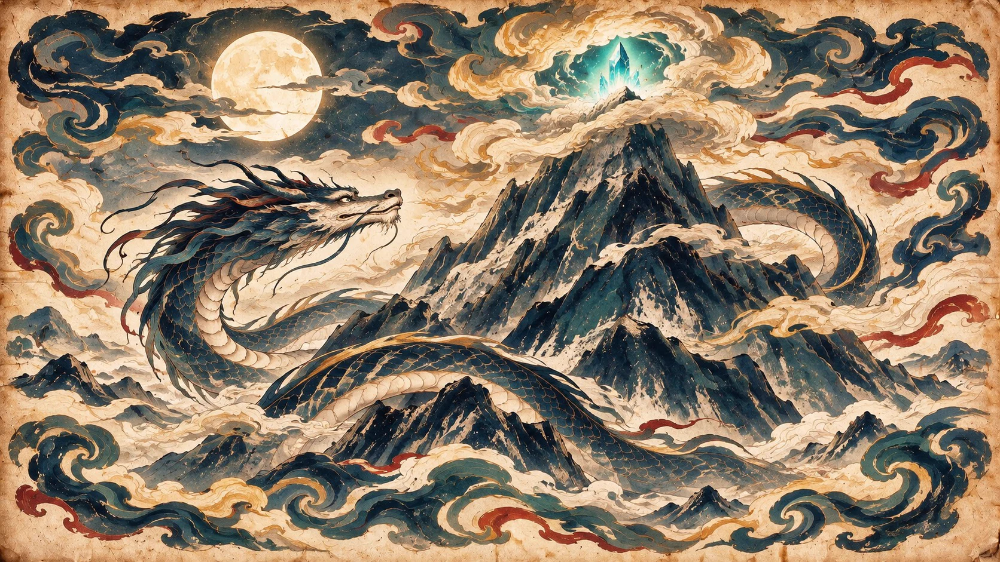
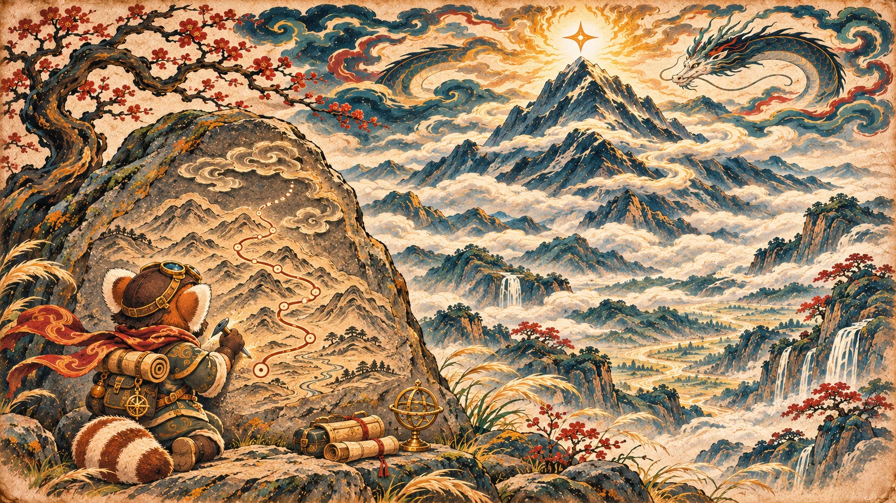
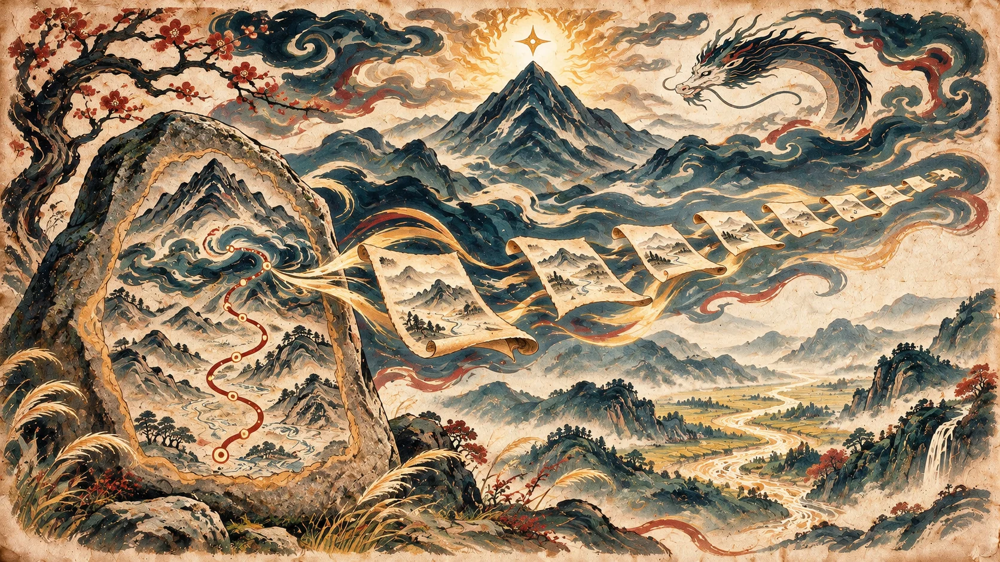
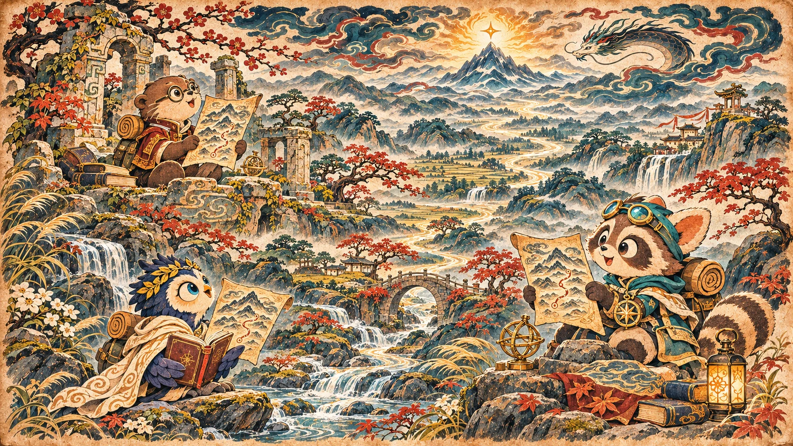
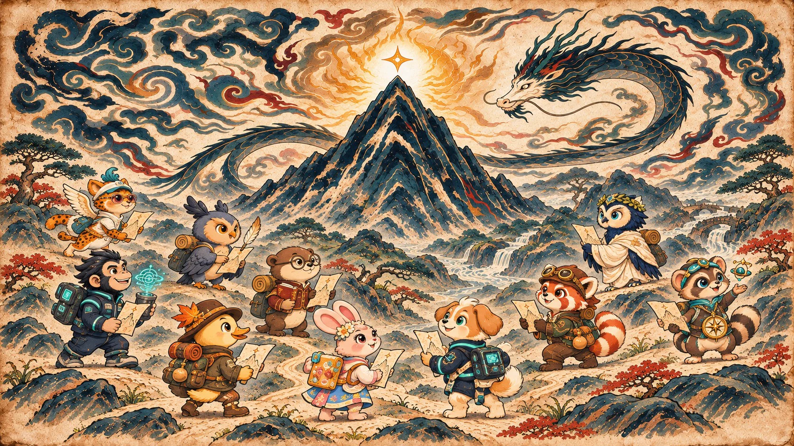
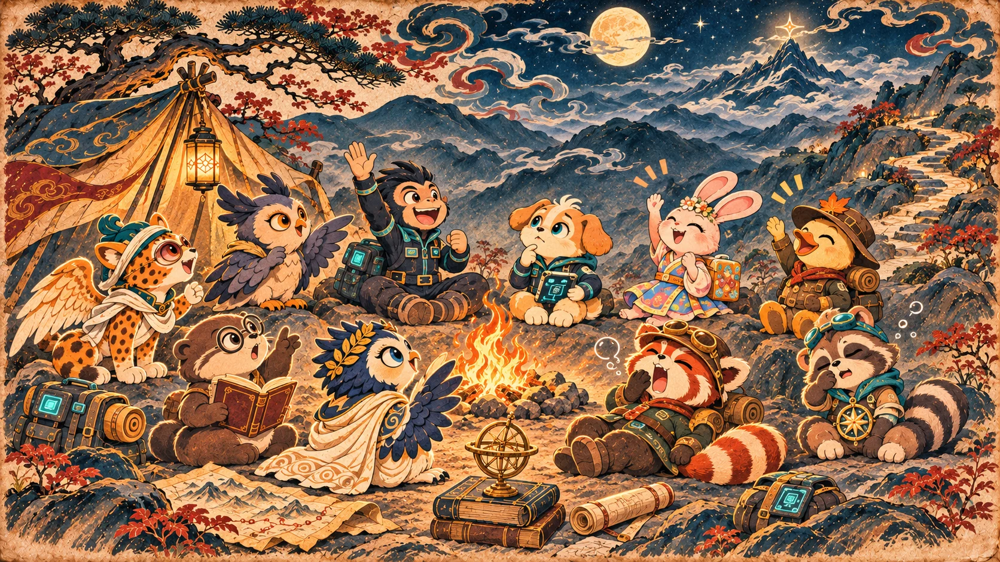
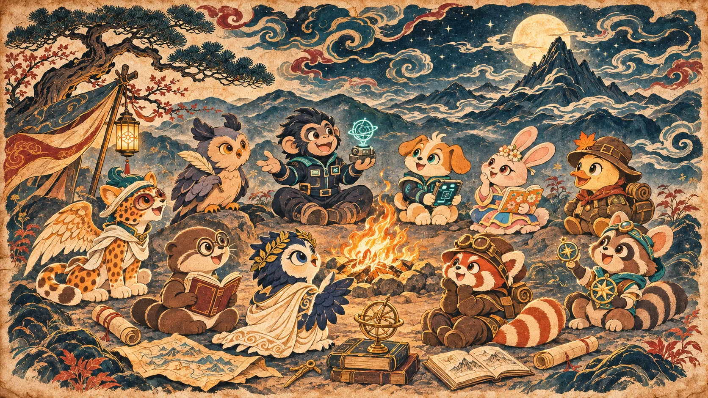

← 返回营地

极岳是一座还在慢慢长高的山。峰顶常年藏在云里，守峰人乾就守在那里。每逢月圆，云缝里会闪过一道青光。据说，那是山顶的灵感结晶在发亮

最早的寻峰者在山脚刻了一张图，图上的路绕到一半，就断在云里。

后来，这张图被临摹了许多遍……

其中九张传到了九只小动物手里。有爱琢磨怎么把点子做出来的水獭，有喜欢摆弄零件的小浣熊，还有走到哪儿都带着日记的猫头鹰。

它们循着图来到极岳，成了后来那支叫「九五智尊」的小队。它们想看看云上到底有什么，也想一起解开沿途的难题，把那些还没做完的点子做出来。

刚上路的时候，它们连谁守夜都差点吵起来

到了第五天晚上，九只小动物在营地围着营火坐下，你一言我一语，聊起各自是怎么来的，也聊起接下来的路，大家能一起做点什么
‹
暂停
›
01 / 07
全屏